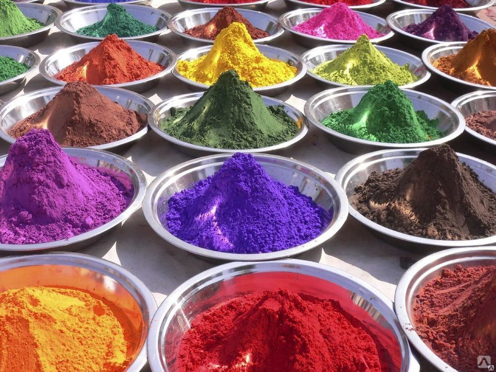

Пищевой краситель или цветовая добавка-это любой краситель, пигмент или вещество, которое придает цвет при добавлении в пищу или напитки.
Они бывают во многих формах, состоящих из жидкостей, порошков, гелей и паст.
Натуральные красители обычно выделяют из природных источников в виде смеси различных по своей химической природе соединений,
состав которой зависит от источника и технологии получения, в связи с чем обеспечить его постоянство часто бывает трудно.
Среди натуральных красителей необходимо отметить каротиноиды (углеводороды из апренового ряда и их кислородсодержащие производные),
антоцианы (природные фенольные соединения), флавоноиды, хлорофиллы (природные пигменты, придающие зелёную окраску).

В отличие от натуральных, искусственные красители не имеют запаха, вкуса,
не обладают биологической значимостью.
Это растворимые в воде, этиле или масляных жидкостях химические
органические соединения. Выпускают их чаще в виде натриевой или
кальциевой солей.
ДОБАВЛЕНИЕ ПИЩЕВЫХ КРАСИТЕЛЕЙ В ПИЩУ
Кроме вкуса и текстуры, цвет тоже играет важную роль при выборе продуктов в магазине. С 19в, Пищевые красители начинают использоваться
более широко. В наше время практически не осталось продукции, в которой бы не применялись пищевые красители. Сейчас практически вся
магазинная продукция содержит в себе различные красители.
ВЛИЯНИЕ ВСЕХ ПИЩЕВЫХ КРАСИТЕЛЕЙ НА ОРГАНИЗМ